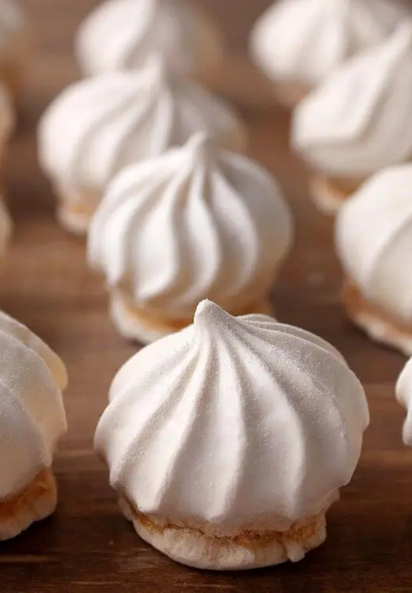

Receita de Suspiro Caseiro
Ingredientes (15 porções)
- 5 claras
- 4 xícaras de açúcar
- 1 limão (aqueles bem verdes e grandes)
Modo de Preparo
- Faça a sua neve com as claras de ovos, deixando bem consistente.
- Na batedeira, vá acrescentando o açúcar, aos poucos.
- Coloque em uma refratária de vidro (ou algo assim) e rale um pouco de casquinha de limão só para dar o toquinho final.
- Leve ao forno a 100º C.
- Deixe por, aproximadamente, 10 minutos e se não crescer, pode aumentar para uns 15 minutos.
